Префектура Симанэ · Идзумо · рёкан
«Кай Идзумо»: рёкан у маяка, где готовятся к встрече с богами
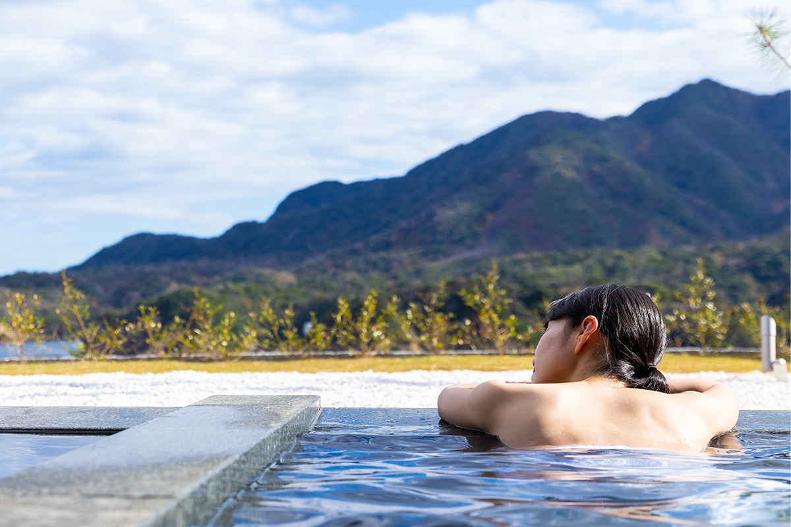
На самом западном краю Идзумо, рядом со старым маяком, в 2022 году открылся рёкан «Кай Идзумо». Его придумали как место, где путешественник отдыхает с дороги и заодно готовится к визиту в святилище Идзумо-тайся.
Место
Край земли богов
Идзумо лежит на востоке префектуры Симанэ, и его называют страной мифов. Здесь стоит святилище Идзумо-тайся, где почитают Окунинуси, бога, который, по преданию, создал японскую землю. В месяц Камиари, 10-й месяц по старому календарю, сюда собираются все боги Японии. Вокруг много древних святилищ, а природные виды Идзумо вошли в японский геопарк и список «Наследие Японии».
Самая западная точка Идзумо это мыс Хиномисаки. Местное предание называет его священным местом, которое охраняет ночь Японии. В ноябре 2022 года здесь, у маяка Идзумо-Хиномисаки и над Японским морем, открылся рёкан «Кай Идзумо».
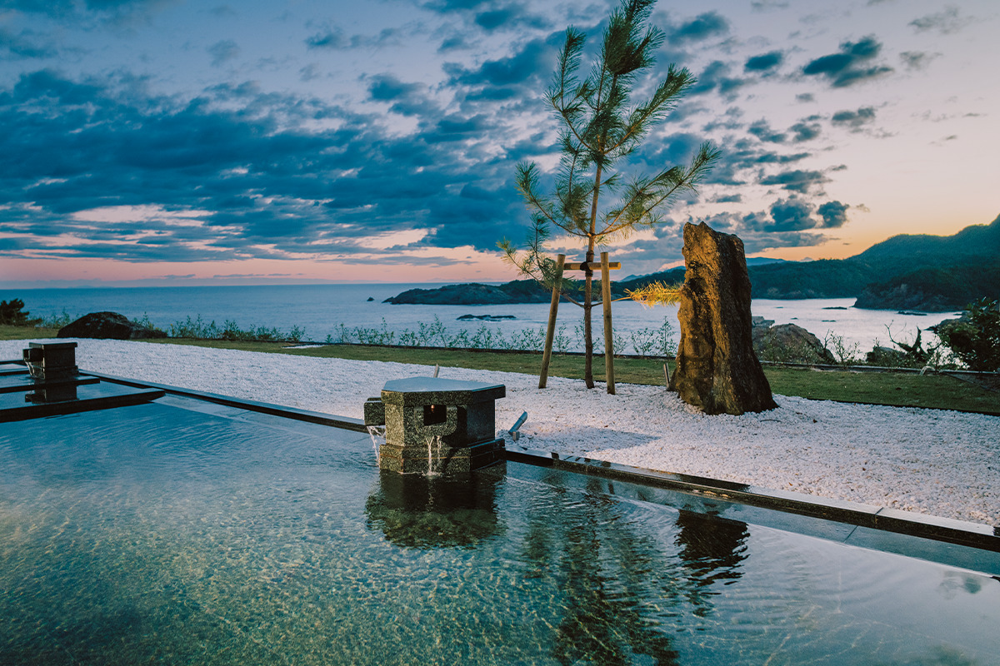
«Кай» это сеть рёканов на горячих источниках от компании «Хосино Ризорт». В каждом из них стараются показать культуру и природу своего края. «Кай Идзумо» строили вокруг одной идеи: дом с видом на маяк и горизонт, где путешественник готовится к поклонению. Гостям предлагают обряды и представления, связанные с мифами Идзумо, и купание, которое очищает душу и тело.
Номера
Цвета моря от заката до рассвета
В рёкане 39 номеров семи типов, и все они оформлены по мотивам здешнего моря. Окна одних смотрят на маяк, других на открытое море. В номерах со стороны маяка много синего цвета индиго: рядом с ним закатное небо кажется ещё ярче. В номерах со стороны моря стены оклеены бумагой сэкисю-васи, местным ремеслом из Симанэ, которое ЮНЕСКО внесла в список нематериального культурного наследия.
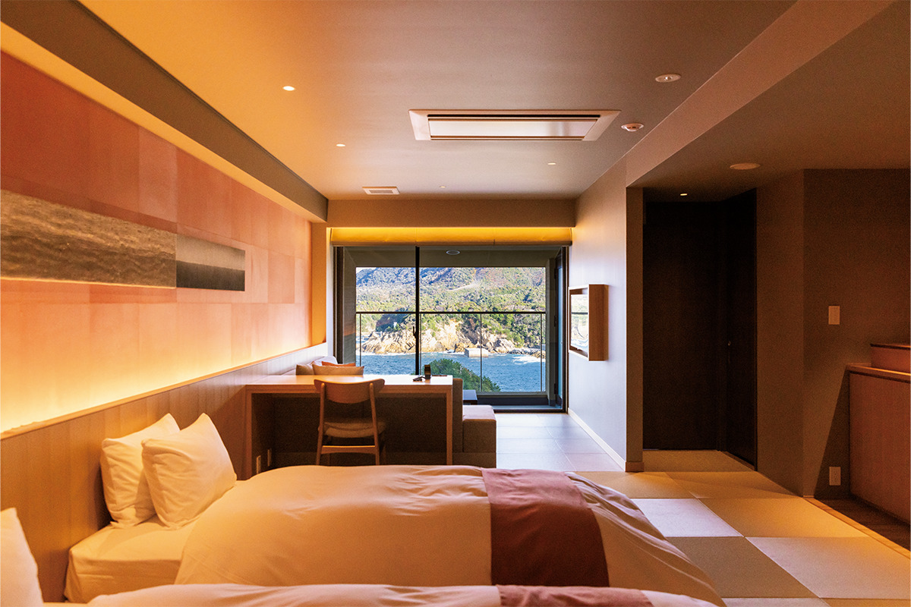
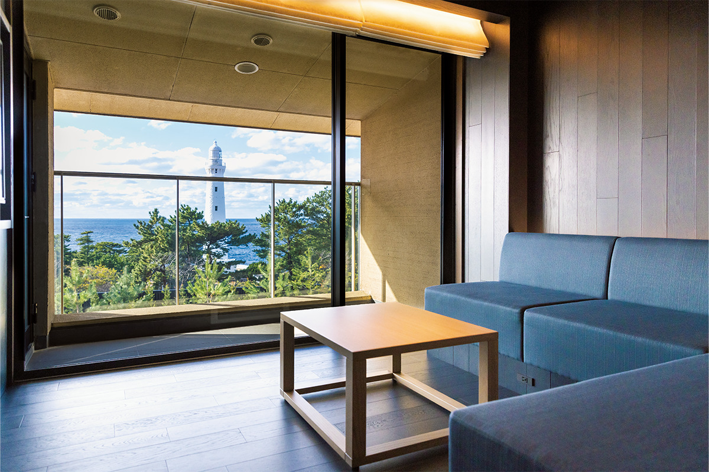
Ремёсла Симанэ здесь повсюду. В холлах и коридорах висят работы из «сифу», ткани, в которую вплетены нити из бумаги ручной выделки. Свет за окнами меняется каждый час, а вместе с ним и комнаты, так что быстро забываешь про городскую спешку.
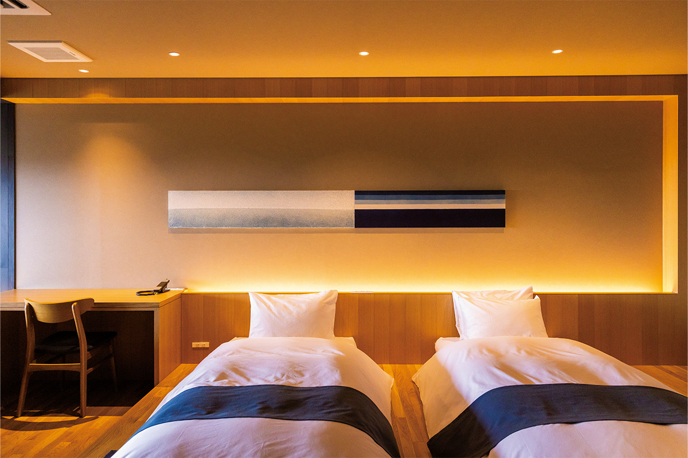
Онсэн
Омовение перед святилищем
Первый же взгляд на общую купальню впечатляет. Купальня словно продолжает пейзаж островков Идзумо-Мацусима: отсюда видно, как меняются краски заката, как над морем загораются звёзды и как небо золотится на рассвете.
«Вода онсэна Идзумо-Хиномисаки очень солёная, поэтому согревает до самых костей и долго держит тепло. Бог-прародитель смыл скверну подземного мира в море, и мы хотим, чтобы гости так же совершали здесь омовение перед тем, как идти в святилище Идзумо-тайся»
управляющая рёканом
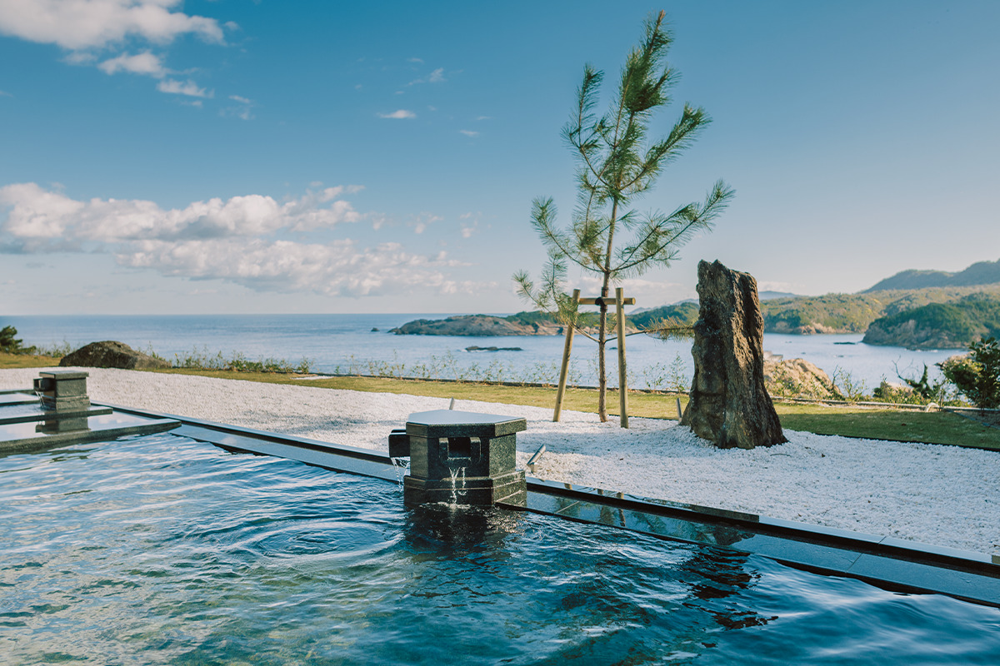
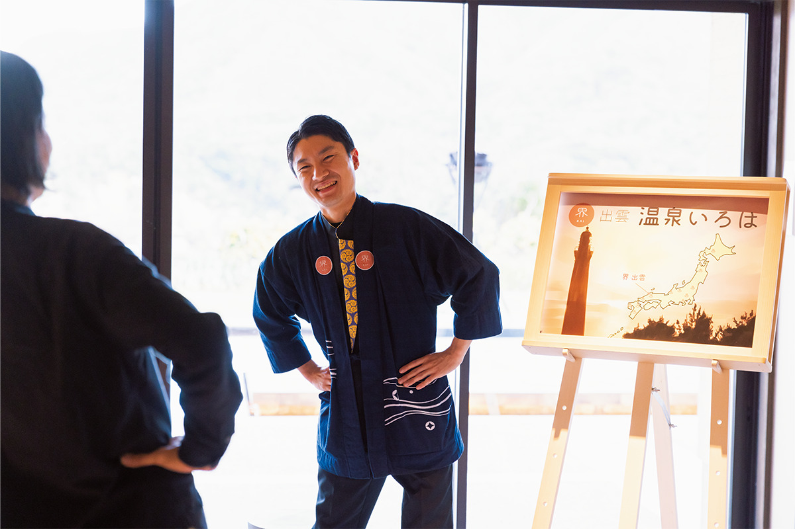
Ужин
Краб, который выходит из рисового тюка
Мифы Идзумо чувствуются и за столом. Главная гордость кухни это ужин «Тагу-цуки кацу мацуба-гани кайсэки»: полное меню из живого краба мацуба-гани с биркой, подтверждающей его происхождение. Повара вдохновлялись образом Окунинуси, которого в святилище Идзумо-тайся почитают и как бога урожая. Поэтому первое блюдо подают в соломе.
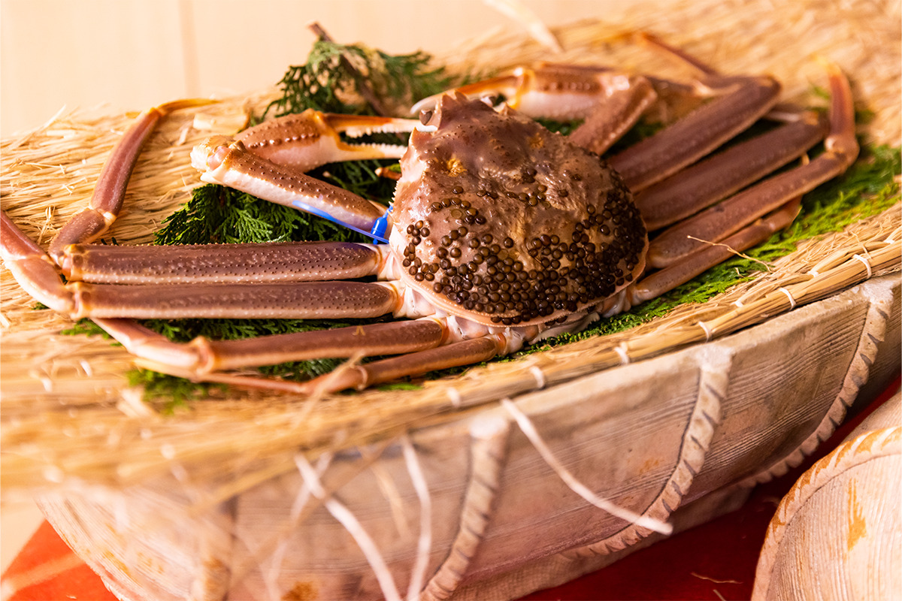
После этого краб появляется в разных видах: свежий сасими, нежное сябу-сябу, хрустящий жареный во фритюре. От того, как краба готовят, меняются и вкус, и текстура. В 2023 году ужин с крабом стоил 13 200 иен за человека в дополнение к цене проживания, с налогом и сервисом, его нужно заказать не позже чем за 5 дней.
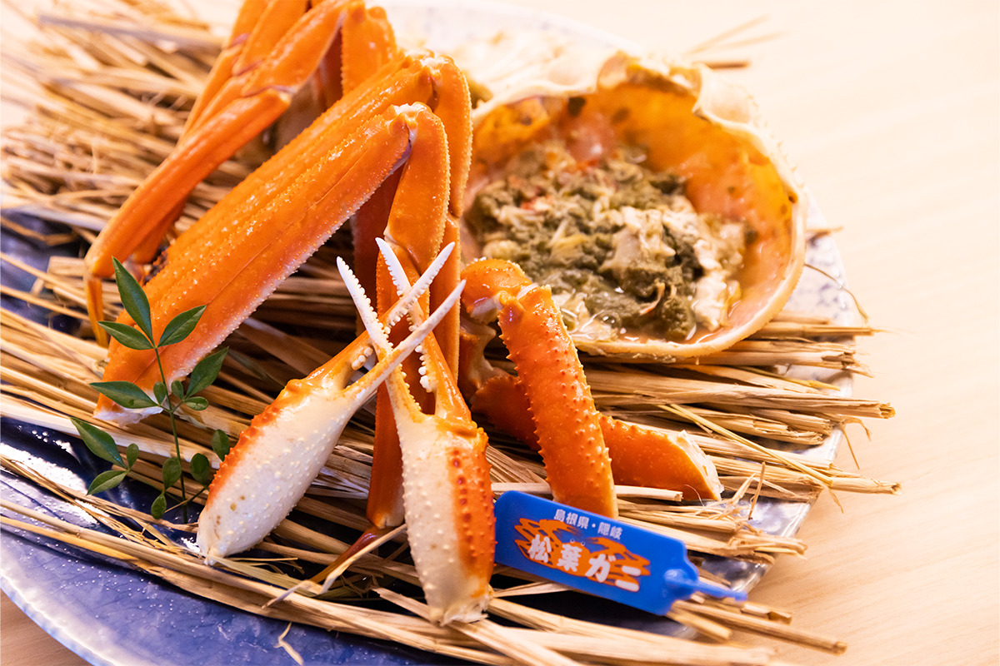
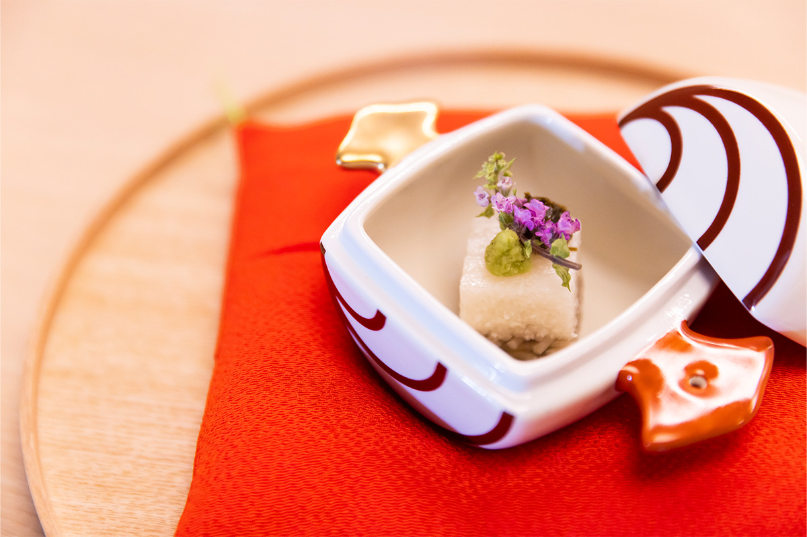
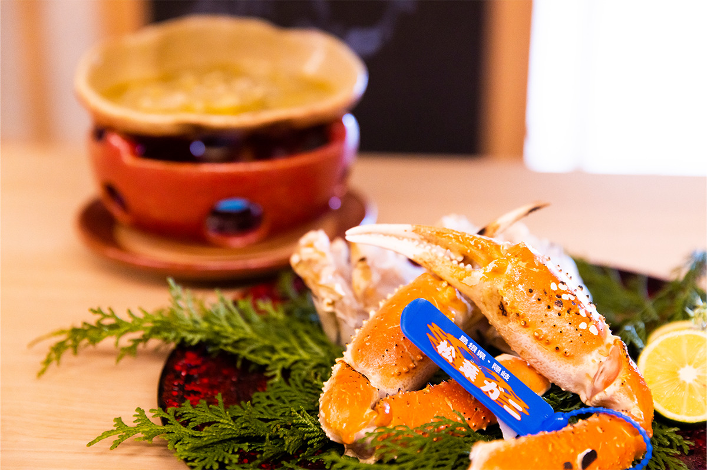
Кагура
Миф о передаче страны
Ещё одна вечерняя программа рёкана это Ивами-кагура, традиционные священные танцы Симанэ. Их показывают каждый вечер, на сцене с видом на Японское море.
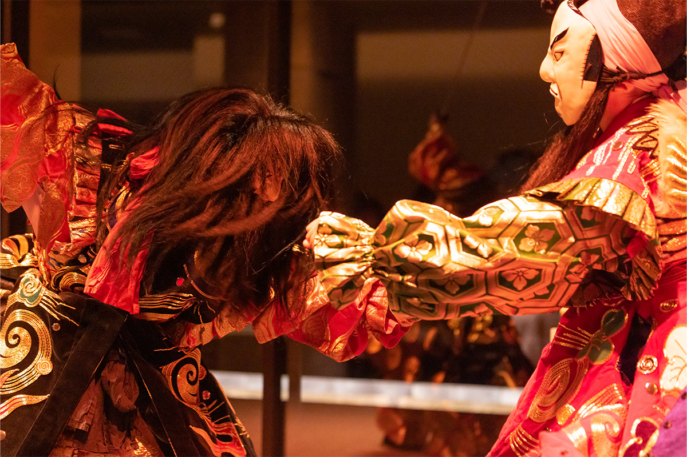
На сцене идёт миф «Куни-юдзури», о передаче страны: о битве богов за землю Идзумо, с которой, по преданию, началась история святилища Идзумо-тайся. Мощные, динамичные танцы на фоне моря рассказывают его лучше любой книги.
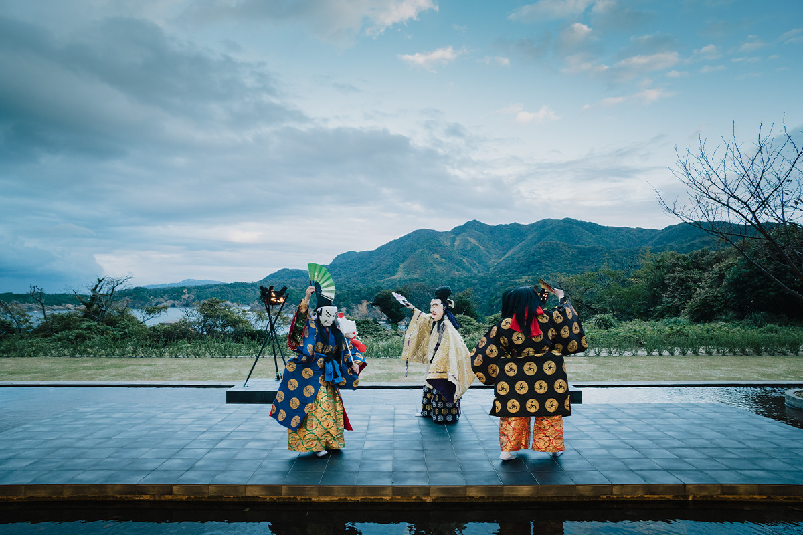
Утро
Завтрак, который подают богам
Утро начинается на террасе «Каватарэ». Отсюда видно, как встаёт солнце и как небо медленно меняет цвета.
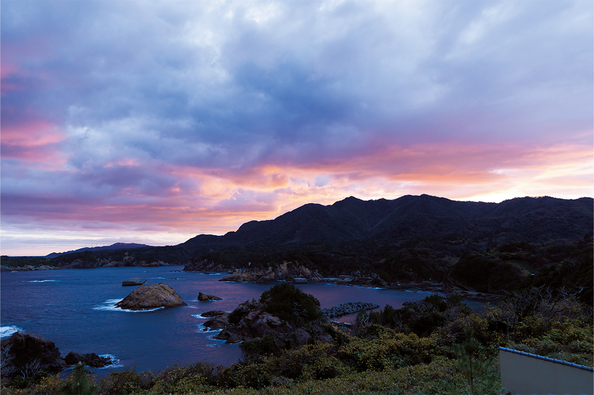
Потом ещё одно омовение в онсэне и завтрак «синсэн»: так называют приношения богам, дары гор и моря. После этого к поклонению всё готово. Мифы Идзумо и отдых для души и тела здесь идут рука об руку.
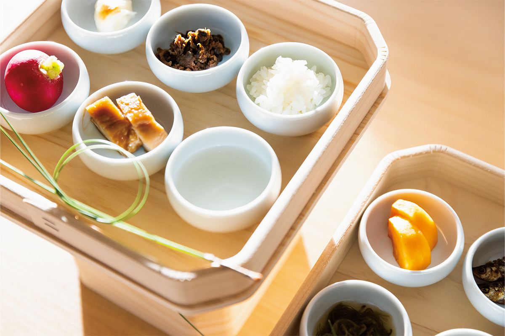
Проживание с ужином и завтраком стоило от 25 000 иен за человека с налогом и сервисом в 2023 году.
Рёкан «Кай Идзумо»
- Адрес
- префектура Симанэ, Идзумо, Тайся-тё, Хиномисаки, 604
- Телефон
- +81 50-3134-8092 (центр бронирования «Кай»)
- Номера
- 39
- Заезд / выезд
- 15:00 / 12:00
- Цены / Вход
- от 25 000 иен за человека с ужином и завтраком, налог и сервис включены; ужин с крабом дополнительно 13 200 иен за человека, бронировать за 5 дней
- Как добраться
- на машине около 30 минут от развязки Идзумо на скоростной дороге Санъин; от станции JR Идзумоси около 40 минут на автобусе «Итибата»
Фото: Акио Накамура.